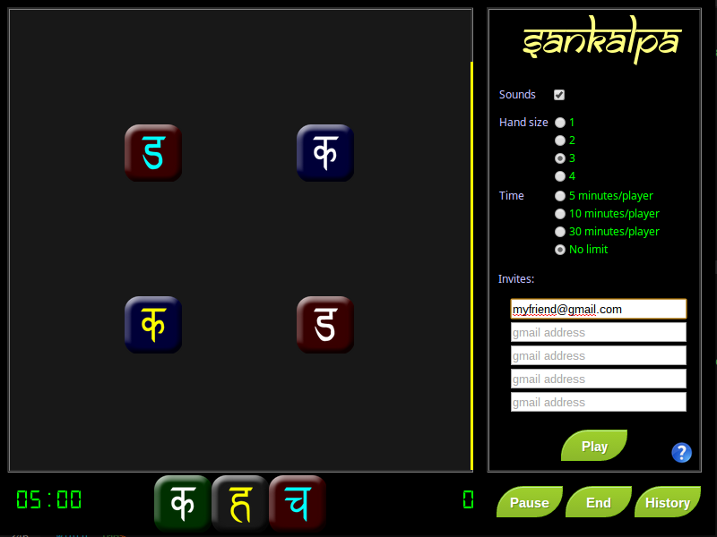
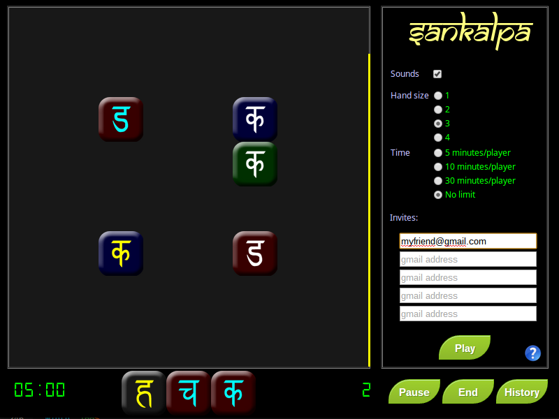
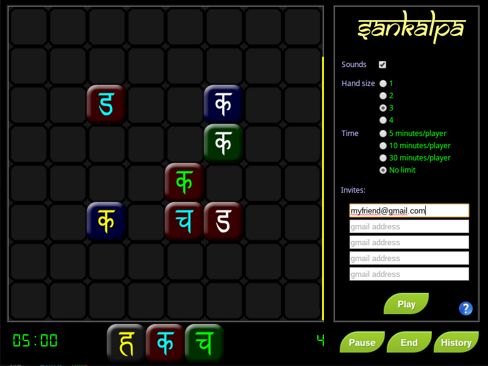
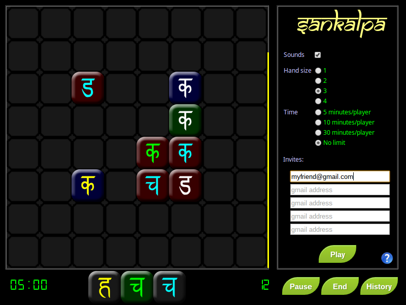

Sankalpa is a game of matching the three different attributes of small stones: Stone color, Sanskrit character, and the color of the character. Each of these attributes has four possibilities, resulting in the 64 unique stones you play with. You place the stones on an 8x8, 64-square board so that all adjacent stones match at least one of the three attributes. The more attributes you match, the more points you score for that play. The "perfect" play in Sankalpa is playing a stone that matches a total of eight attributes; two attributes with each of the four stones it touches, scoring 128 points:
| # matched attributes | Points |
|---|---|
| 1 | 1 |
| 2 | 2 |
| 3 | 4 |
| 4 | 8 |
| 5 | 16 |
| 6 | 32 |
| 7 | 64 |
| 8 | 128 |
Successfully placing all 64 stones is an enormous challenge, and doing so yields a 256 point bonus. Placing all stones but one is awarded a 128 point bonus, and all stones but two is a 64 point bonus.
Let's look at a starting board:

Notice that the board starts with four stones selected at random. Just below the board is your "hand" - the
set of stones that you select from every turn.
In this example, the leftmost stone in the hand could be played anywhere adjacent to the upper-rightmost stone on the board, which would match both the color of the symbols and the symbol itself. This same stone could also be played adjacent to the bottom-rightmost stone, which would match the color of the symbols. It could also be played adjacent to the bottom-leftmost stone on the board to match the symbol. The first choice of play is illustrated below:

Here is this same sample board a few turns later:

Here, the middle stone from the hand could be placed within the cluster of stones in the bottom-right area of the board.
This play would match the symbol of the stone above it, the color of the stone and the symbol with the stone to the left,
and the color of the stone with the symbol below it:

On one of his expeditions in Nepal in the early 20th century, he had encountered a small, remote and isolated Buddhist Nyingma temple with a lone, ancient monk cloistered there. The monk never spoke, but spent nearly every waking moment studying what appeared to be a game of some sort, unlike any Hillary had seen before. As Hillary and Tenzing would observe, days passed with the monk in silent contemplation over his board. Hillary vowed to unravel the history and mystery of this monk's devotion. Was he seeking the enlightenment of "Great Perfection" (Dzogchen)? This would be a major discovery for Hillary, and so he returned every year to spend time observing and documenting the monks activities.
On every yearly visit, Hillary would record the board's new configuration of stones, and compare it with the previous year's for the changes. From this, and over a period of many years, Hillary worked out the mechanics of the monk's efforts. On his final visit to the monk, he witnessed the monk completing the board, at which time the monk looked up at Hillary, and for the first time spoke: "Dzogchen". The monk took one last look at the board, smiled, then smashed it to pieces. He died later that same night.
Hillary was torn on whether to publish this wondrous story and share these ancient secrets he had learned. In the end, and to honor what he had witnessed with the monk, he decided to wait until his last breath to share with the world the amazing beauty of Sankalpa.
Seek your own Dzogchen.
(Just don't die)